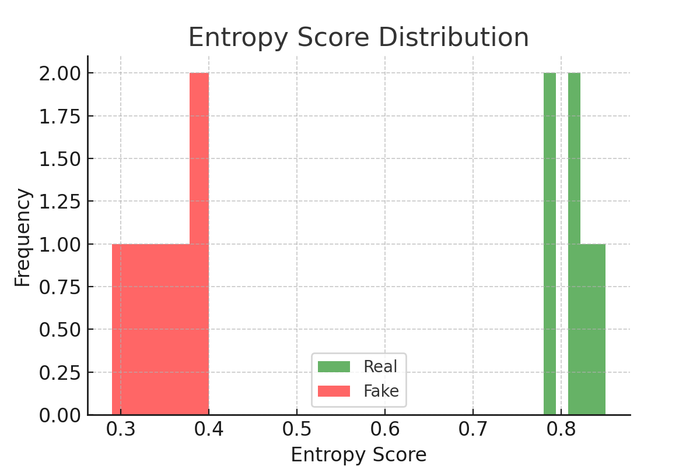

HumanTag SDK
Biometric Watermarking & Cryptographic Media Verification SDK
Patent Pending · Apache 2.0 Licensed
🔍 What is HumanTag?
HumanTag provides real-time biometric watermarking and cryptographic verification for media authenticity.
📦 SDK Features
- Biometric entropy simulation (PPG, GSR, EKG)
- Secure digital signature (ECDSA)
- Watermark embedding & verification
- Forgery detection via entropy gating
💻 Demo Output


📁 Try It Locally
View on GitHub
☕ Sponsor or Contact
Sponsor via Ko-fi
Contact Developer